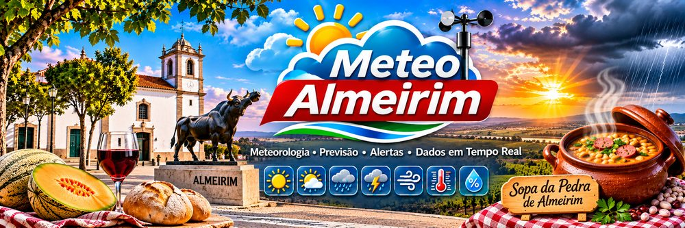

Estação IALMEI2 · Bresser 5 em 1
Almeirim - Santarém
A ligar à estação…
--°C
Sensação --
Ponto de orvalho --
Máxima hoje
--
Mínima hoje
--
Rajada máx. hoje
--
Chuva hoje
--
Vento
--km/h
de -- · rajada --
Humidade
--%
Pressão
--hPa
tendência 3 h: --
Chuva
--mm hoje
intensidade -- mm/h
Últimas 24 horas
Temperatura e ponto de orvalho°C
Vento médio e rajadakm/h
PressãohPa
Chuva acumuladamm
Previsão para 7 dias
Almeirim · meteobluePrevisão: meteoblue · ver previsão detalhada
Rio Tejo · caudais e barragens
A carregar dados da APA…
↑a subir→estável↓a descer
%barragem: armazenamento
Toque num ponto para ver o detalhe.
Caudal no Tejo · últimas 72 horasm³/s
Ver todos os valores em tabela
Estações no rio montante → jusante
| Estação | Caudal | Nível | Tendência 3 h | 72 h | Leitura |
|---|
Barragens montante → jusante
| Barragem | Armazenamento | Cota | Descarga | Afluência | Leitura |
|---|
Fonte: APA · InfoÁgua / SNIRH, rede de vigilância e alerta de cheias. Dados provisórios, recolhidos de 30 em 30 minutos. Posição dos pontos aproximada.
Avisos meteorológicos
Sem avisoAmareloLaranjaVermelho
Distrito de Santarém
A carregar avisos do IPMA…
Risco de incêndio
ReduzidoModeradoElevadoMuito elevadoMáximo
Risco de incêndio rural do IPMA por concelho, distrito de Santarém. Toque num concelho para ver o nome e o risco.
Radar de chuva e trovoada
Fontes: radar do IPMA (cópia atualizada de 10 em 10 minutos) ·
Blitzortung.org / LightningMaps